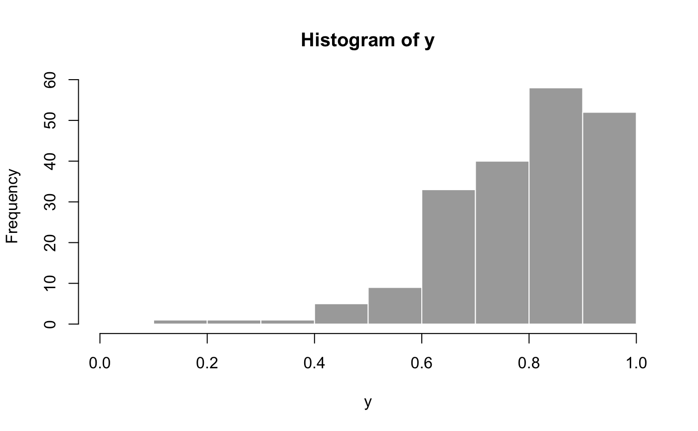

Bayesian beta regression models via Stan
Source:R/stan_betareg.R, R/stan_betareg.fit.R
stan_betareg.Rd
Beta regression modeling with optional prior distributions for the
coefficients, intercept, and auxiliary parameter phi (if applicable).
Usage
stan_betareg(
formula,
data,
subset,
na.action,
weights,
offset,
link = c("logit", "probit", "cloglog", "cauchit", "log", "loglog"),
link.phi = NULL,
model = TRUE,
y = TRUE,
x = FALSE,
...,
prior = normal(autoscale = TRUE),
prior_intercept = normal(autoscale = TRUE),
prior_z = normal(autoscale = TRUE),
prior_intercept_z = normal(autoscale = TRUE),
prior_phi = exponential(autoscale = TRUE),
prior_PD = FALSE,
algorithm = c("sampling", "optimizing", "meanfield", "fullrank"),
adapt_delta = NULL,
QR = FALSE
)
stan_betareg.fit(
x,
y,
z = NULL,
weights = rep(1, NROW(x)),
offset = rep(0, NROW(x)),
link = c("logit", "probit", "cloglog", "cauchit", "log", "loglog"),
link.phi = NULL,
...,
prior = normal(autoscale = TRUE),
prior_intercept = normal(autoscale = TRUE),
prior_z = normal(autoscale = TRUE),
prior_intercept_z = normal(autoscale = TRUE),
prior_phi = exponential(autoscale = TRUE),
prior_PD = FALSE,
algorithm = c("sampling", "optimizing", "meanfield", "fullrank"),
adapt_delta = NULL,
QR = FALSE
)Arguments
- formula, data, subset
Same as
betareg, but we strongly advise against omitting thedataargument. Unlessdatais specified (and is a data frame) many post-estimation functions (includingupdate,loo,kfold) are not guaranteed to work properly.- na.action
Same as
betareg, but rarely specified.- link
Character specification of the link function used in the model for mu (specified through
x). Currently, "logit", "probit", "cloglog", "cauchit", "log", and "loglog" are supported.- link.phi
If applicable, character specification of the link function used in the model for
phi(specified throughz). Currently, "identity", "log" (default), and "sqrt" are supported. Since the "sqrt" link function is known to be unstable, it is advisable to specify a different link function (or to modelphias a scalar parameter instead of via a linear predictor by excludingzfrom theformulaand excludinglink.phi).- model, offset, weights
Same as
betareg.- x, y
In
stan_betareg, logical scalars indicating whether to return the design matrix and response vector. Instan_betareg.fit, a design matrix and response vector.- ...
Further arguments passed to the function in the rstan package (
sampling,vb, oroptimizing), corresponding to the estimation method named byalgorithm. For example, ifalgorithmis"sampling"it is possible to specifyiter,chains,cores, and other MCMC controls.Another useful argument that can be passed to rstan via
...isrefresh, which specifies how often to print updates when sampling (i.e., show the progress everyrefreshiterations).refresh=0turns off the iteration updates.- prior
The prior distribution for the (non-hierarchical) regression coefficients.
The default priors are described in the vignette Prior Distributions for rstanarm Models. If not using the default,
priorshould be a call to one of the various functions provided by rstanarm for specifying priors. The subset of these functions that can be used for the prior on the coefficients can be grouped into several "families":Family Functions Student t family normal,student_t,cauchyHierarchical shrinkage family hs,hs_plusLaplace family laplace,lassoProduct normal family product_normalSee the priors help page for details on the families and how to specify the arguments for all of the functions in the table above. To omit a prior —i.e., to use a flat (improper) uniform prior—
priorcan be set toNULL, although this is rarely a good idea.Note: Unless
QR=TRUE, ifprioris from the Student t family or Laplace family, and if theautoscaleargument to the function used to specify the prior (e.g.normal) is left at its default and recommended value ofTRUE, then the default or user-specified prior scale(s) may be adjusted internally based on the scales of the predictors. See the priors help page and the Prior Distributions vignette for details on the rescaling and theprior_summaryfunction for a summary of the priors used for a particular model.- prior_intercept
The prior distribution for the intercept (after centering all predictors, see note below).
The default prior is described in the vignette Prior Distributions for rstanarm Models. If not using the default,
prior_interceptcan be a call tonormal,student_torcauchy. See the priors help page for details on these functions. To omit a prior on the intercept —i.e., to use a flat (improper) uniform prior—prior_interceptcan be set toNULL.Note: If using a dense representation of the design matrix —i.e., if the
sparseargument is left at its default value ofFALSE— then the prior distribution for the intercept is set so it applies to the value when all predictors are centered (you don't need to manually center them). This is explained further in [Prior Distributions for rstanarm Models](https://mc-stan.org/rstanarm/articles/priors.html) If you prefer to specify a prior on the intercept without the predictors being auto-centered, then you have to omit the intercept from theformulaand include a column of ones as a predictor, in which case some element ofpriorspecifies the prior on it, rather thanprior_intercept. Regardless of howprior_interceptis specified, the reported estimates of the intercept always correspond to a parameterization without centered predictors (i.e., same as inglm).- prior_z
Prior distribution for the coefficients in the model for
phi(if applicable). Same options as forprior.- prior_intercept_z
Prior distribution for the intercept in the model for
phi(if applicable). Same options as forprior_intercept.- prior_phi
The prior distribution for
phiif it is not modeled as a function of predictors. Ifzvariables are specified thenprior_phiis ignored andprior_intercept_zandprior_zare used to specify the priors on the intercept and coefficients in the model forphi. When applicable,prior_phican be a call toexponentialto use an exponential distribution, or one ofnormal,student_torcauchyto use half-normal, half-t, or half-Cauchy prior. Seepriorsfor details on these functions. To omit a prior —i.e., to use a flat (improper) uniform prior— setprior_phitoNULL.- prior_PD
A logical scalar (defaulting to
FALSE) indicating whether to draw from the prior predictive distribution instead of conditioning on the outcome.- algorithm
A string (possibly abbreviated) indicating the estimation approach to use. Can be
"sampling"for MCMC (the default),"optimizing"for optimization,"meanfield"for variational inference with independent normal distributions, or"fullrank"for variational inference with a multivariate normal distribution. Seerstanarm-packagefor more details on the estimation algorithms. NOTE: not all fitting functions support all four algorithms.- adapt_delta
Only relevant if
algorithm="sampling". See the adapt_delta help page for details.- QR
A logical scalar defaulting to
FALSE, but ifTRUEapplies a scaledqrdecomposition to the design matrix. The transformation does not change the likelihood of the data but is recommended for computational reasons when there are multiple predictors. See the QR-argument documentation page for details on how rstanarm does the transformation and important information about how to interpret the prior distributions of the model parameters when usingQR=TRUE.- z
For
stan_betareg.fit, a regressor matrix forphi. Defaults to an intercept only.
Value
A stanreg object is returned
for stan_betareg.
A stanfit object (or a slightly modified
stanfit object) is returned if stan_betareg.fit is called directly.
Details
The stan_betareg function is similar in syntax to
betareg but rather than performing maximum
likelihood estimation, full Bayesian estimation is performed (if
algorithm is "sampling") via MCMC. The Bayesian model adds
priors (independent by default) on the coefficients of the beta regression
model. The stan_betareg function calls the workhorse
stan_betareg.fit function, but it is also possible to call the
latter directly.
References
Ferrari, SLP and Cribari-Neto, F (2004). Beta regression for modeling rates and proportions. Journal of Applied Statistics. 31(7), 799–815.
See also
stanreg-methods and
betareg.
The vignette for stan_betareg.
https://mc-stan.org/rstanarm/articles/
Examples
if (.Platform$OS.type != "windows" || .Platform$r_arch != "i386") {
### Simulated data
N <- 200
x <- rnorm(N, 2, 1)
z <- rnorm(N, 2, 1)
mu <- binomial(link = "logit")$linkinv(1 + 0.2*x)
phi <- exp(1.5 + 0.4*z)
y <- rbeta(N, mu * phi, (1 - mu) * phi)
hist(y, col = "dark grey", border = FALSE, xlim = c(0,1))
fake_dat <- data.frame(y, x, z)
fit <- stan_betareg(
y ~ x | z, data = fake_dat,
link = "logit",
link.phi = "log",
algorithm = "optimizing" # just for speed of example
)
print(fit, digits = 2)
}

#> stan_betareg
#> family: beta [logit, link.phi=log]
#> formula: y ~ x | z
#> observations: 200
#> ------
#> Median MAD_SD
#> (Intercept) 1.02 0.11
#> x 0.17 0.05
#> (phi)_(Intercept) 1.35 0.24
#> (phi)_z 0.45 0.12
#>
#> ------
#> * For help interpreting the printed output see ?print.stanreg
#> * For info on the priors used see ?prior_summary.stanreg